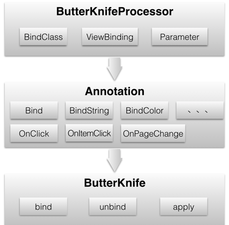
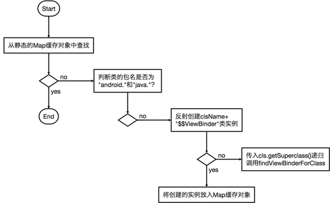

butterknife 的特性
- Eliminate findViewById calls by using @Bind on fields.
- Group multiple views in a list or array. Operate on all of them at once with actions, setters, or properties.
- Eliminate anonymous inner-classes for listeners by annotating methods with @OnClick and others.
- Eliminate resource lookups by using resource annotations on fields.
butterknife 的总体设计

-
ButterKnifeProcessor: 继承 AbstractProcessor 类，重写了 getSupportedAnnotationTypes 和 process 方法。JVM编译阶段在 process 方法中读取 类文件中定义的 butterknife Annotation，生成相应的 class 文件（形如：XXX$$ViewBinder）。
-
Annotation: 主要分为两类：
- 资源：@Bind、@BindString、 @BindDrawable、... @BindColor
-
事件：@OnClick、@OnItemClick、@OnItemSelected、... @OnPageChange
-
ButterKnife: JVM 运行时调用自身的bind和unbind方法，在 ButterKnifeProcessor 生成的 class 文件中查找对应的类，通过反射创建类实例，调用bind或unbind方法。
butterknife 的核心类功能介绍
ButterKnife.java
对外提供API，对内提供自动生产代码模板。
- bind 和 unbind 都调用了 findViewBinderForClass 查找实际要执行的类。findViewBinderForClass 的查找逻辑实现流程图如下：

- apply 方法 用于对一组元素执行相同的逻辑操作。如下所示：
@Bind({ R.id.first_name, R.id.middle_name, R.id.last_name })
List<EditText> nameViews;
ButterKnife.apply(nameViews, DISABLE);
ButterKnife.apply(nameViews, ENABLED, false);
static final ButterKnife.Action<View> DISABLE = new ButterKnife.Action<View>() {
@Override public void apply(View view, int index) {
view.setEnabled(false);
}
};
static final ButterKnife.Setter<View, Boolean> ENABLED = new ButterKnife.Setter<View, Boolean>() {
@Override public void set(View view, Boolean value, int index) {
view.setEnabled(value);
}
};
ButterKnife.Action 的定义如下：
/** An action that can be applied to a list of views. */
public interface Action<T extends View> {
/** Apply the action on the {@code view} which is at {@code index} in the list. */
void apply(T view, int index);
}
方法实现：
/** Apply the specified {@code action} across the {@code list} of views. */
public static <T extends View> void apply(List<T> list, Action<? super T> action) {
for (int i = 0, count = list.size(); i < count; i++) {
action.apply(list.get(i), i);
}
}
Comments !